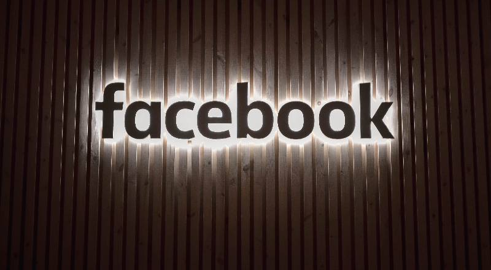
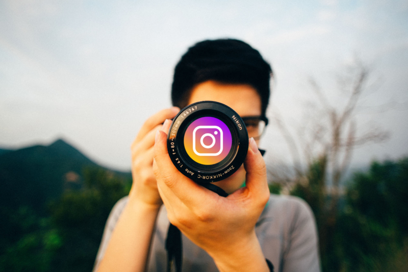

Many people think of Facebook as the original social media, however, social media actually began with a website called Six Degrees in 1997. From there, blogging and instant messaging became popular, as they allowed individuals to connect with one another instantaneously. By the year 2000, around 100 million people were on the internet. Chat rooms were common during this time. As the 2000's continued, sites such as LinkedIn and Myspace were created.
Then in 2004, Mark Zuckerburg invented the notorious Facebook, which has gone on to become the largest social media network in the world, boasting over one billion users. Another famous social media site is Twitter, which was created in 2006. Photo sharing sites such as Flickr or Instagram soon emerged, as well as sites like Tumblr and Pinterest. Now there are countless social media networks, rannging from broad and general to highly spcified sites.
Today, social media has become a phenomenon. Approximately 88% of 18-29 year olds use some form of social media. Facebook is the most popular form of social media, as 2/3 of U.S. adults are users, 3/4 of whom operate Facebook on a day to day basis. The second most visited social media site is Youtube, which is used by 94% of 18-24 year olds.
Snapchat is another well-known social media platform. It is used by 78% of 18-24 year olds, 71% of whom access the app multiple times a day. Around 71% of these young adults also use Instagram and 45% use Twitter. The vast number of social media users is likely the result of its highly addictive tendencies.
"Social media is the ultimate equalizer. It gives a voice and a platform to anyone willing to engage."
- Amy Jo Martin